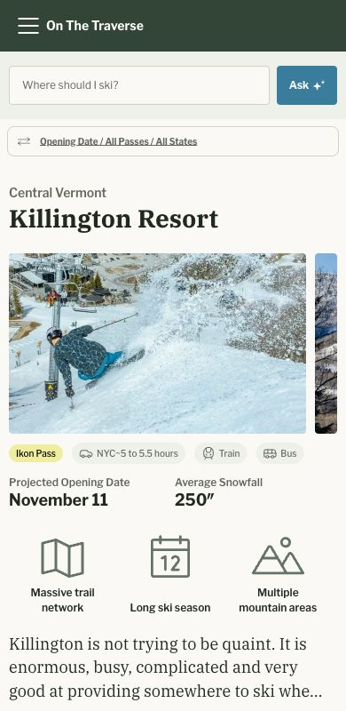
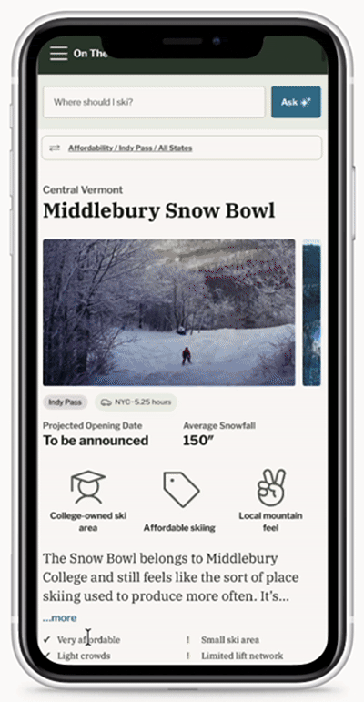

On the Traverse / Case study
Finding the right mountain is half the adventure.
There are plenty of ways to choose where to ski. Snowfall totals, vertical feet, lift tickets, the promise of a decent après. None tells the whole story.
On the Traverse is a guide to skiing the Northeast, built to help people find mountains that suit the way they actually ski. It brings together mountain facts, local knowledge, thoughtful comparisons, and a little help from AI.

- Role
- Product design & development
- Product
- Northeast ski discovery & comparison
- Stage
- Independent project
In development - Stack
- Next.js · TypeScript
Google Sheets · OpenAI - Collaboration
- Design and development by me, with editorial collaboration from a writer and journalist.
The problem
Bigger isn’t always better.
The Northeast has its share of famous mountains. It also has modest hills with loyal followings, excellent terrain tucked away in unlikely places, and ski areas that haven’t changed much in decades.
Choosing between them isn’t simply a matter of counting trails.
A family heading north from New York has different priorities than someone looking for steep glades and a quiet midweek escape. A mountain that’s perfect after a storm might be less appealing on a crowded Saturday.
Most resort websites are very good at telling you why you should visit. They’re less helpful when you’re trying to decide between them.
I wanted to make that decision easier. Not by declaring one mountain better than another, but by helping people understand what makes each worth visiting.
The foundation
Every mountain has its own story. The facts should still agree.
Before designing the experience, I needed a consistent way to describe a mountain.
Vertical drop, snowfall, terrain, lift access, driving distance, and the price of a day on snow all matter. So do the less measurable qualities: atmosphere, tree skiing, family friendliness, and whether there’s somewhere worth stopping afterward.
I organized this information in Google Sheets and TypeScript, creating a shared foundation for the entire product.
The distinction between fact and opinion was deliberate. Snowfall can be measured. Atmosphere requires judgment. Missing information shouldn’t be mistaken for a zero. Experience ratings remain subjective assessments; some are prototypes, rather than verified mountain facts.
The structure also lets ordinary catalog content change without rebuilding the application.
The aim is a guide that can compare mountains consistently without pretending they’re all alike.
| Information | Examples | Design responsibility |
|---|---|---|
| Mountain facts | Vertical, acreage, annual snowfall | Keep units visible and unknown values distinct from zero. |
| Access & logistics | Passes, NYC drive time, transport | Help people narrow viable options before judging preference fit. |
| Experience ratings | Family, beginner, tree skiing, après | Distinguish subjective assessments from measured facts. |
| Editorial context | Descriptions, highlights, pros & cons | Explain the character and tradeoffs that numbers leave out. |
The experience
A little browsing. A little comparing. Then a decision.
Finding somewhere to ski should be enjoyable. It shouldn’t require opening a dozen browser tabs.
I designed the experience around three familiar steps: explore, compare, and look more closely. I built them in Next.js and TypeScript, using shared cards, metadata, selection controls, and a consistent information model. The aim was to make moving between browsing, comparing, and deciding feel natural.

Build a shortlist
Find your kind of mountain.
Start with photography, useful facts, and a sense of place. Browse the catalog, narrow it with filters, or describe what you’re looking for in your own words.
Compare is a selection action; Details is navigation. Keeping those controls distinct makes the next step explicit.
Local implementation capture

Understand the tradeoffs
See what matters.
Put a few mountains side by side. Aligned rows make terrain, access, passes, and trip details easier to scan. Selection supports up to three resorts.
The capture shows Killington and Stratton. It demonstrates the comparison structure; it does not establish which mountain is right for a particular trip.
Local implementation capture

Look more closely
Get to know the place.
Numbers are useful, but they rarely capture the whole experience. Each mountain has a closer look at its character, strengths, and tradeoffs. Intercepted navigation and shared preference state are designed to let people return to Explore without rebuilding their search.
Session continuity, missing-data presentation and responsive detail behavior remain important acceptance checks.
Local implementation capture
Designing with AI
Skiers don’t always think in filters.
Someone planning a weekend might know exactly what they’re after without knowing which boxes to check.
“Good après, close to Saratoga.”
It’s a perfectly reasonable request. It doesn’t fit neatly into a traditional search form.
I built a natural-language search experience that interprets requests like this and translates them into criteria the product understands.
The important decision was what happened next. Rather than asking an AI model to recommend mountains from memory, I separated interpretation from selection.
“Good après, close to Saratoga.”

An explanation of the architecture, not a captured model response.- 01 / Interpret
Understand the request
The language model translates the request into a structured contract of supported preferences, such as location, snowfall, terrain, or après.
- 02 / Constrain
Check the facts
Application code searches the loaded catalog and applies explicit constraints to identify which mountains qualify. Unsupported criteria and missing information remain visible.
- 03 / Rank
Make a recommendation
Supported preferences determine the ranking in deterministic code. The product generates reasons from matched catalog attributes.
AI recommendations
A recommendation should have a reason.
AI can be persuasive even when it doesn’t know what it’s talking about.
I didn’t want a confident recommendation for a mountain that doesn’t exist, a bar that isn’t open, or snow conditions that haven’t been verified.
The model interprets what someone wants. The catalog establishes what the product knows. The application makes the selection.
There are limits, of course. A request for a particular beer on tap requires information the guide doesn’t have. So does a question about live conditions. Those limits should be visible rather than quietly filled in with guesses.
A useful recommendation isn’t necessarily the most confident one. It’s the one you can understand.
The trust boundary
The model does not supply resort facts or choose mountains from its own knowledge. A match score describes heuristic fit; it is not a probability that someone will enjoy a trip.
Designing the limits is part of the feature.
Unsupported requests
Show an unverified state when the product cannot support a criterion. Exact drink availability and live conditions require evidence outside this model.
Geographic ambiguity
Distinguish location proximity, straight-line distance and stored NYC drive time. They answer different questions.
More than three candidates
The source includes an initial shortlist with inline expansion. Ranking, filters and selection continuity still need end-to-end validation.
From design to code
The little things are rarely little.
A design still has to survive a phone screen, a slow connection, and someone changing their mind halfway through a search.
Building the product myself brought those details into focus. Source reviews and design audits helped me identify where consistency and interaction behavior needed closer attention.
Put the question first
On mobile, I brought natural-language search closer to the beginning of the experience, while keeping traditional browsing controls available. Both ways of finding a mountain should feel equally natural.
Make every action clear
Sorting, filtering, comparing, and opening a mountain’s details are different tasks. Their controls should behave accordingly, especially when someone has already selected a few places.
Don’t lose your place
Returning from a mountain’s details shouldn’t mean starting the search again. Selection states, touch targets, dialog focus, scroll restoration, and loading or empty states deserve as much attention as the main features. These remain areas of refinement, with physical-device testing planned.
What I learned
Good recommendations begin long before the search.
The most interesting part of this project has been deciding what information deserves to be trusted, how different kinds of information should be compared, and what to do when the answer isn’t certain.
The work has brought together product design, editorial judgment, information architecture, and application development. It has also reinforced something I believe about useful technology: the complexity should belong to the product, not the person using it.
The next step is to put the experience in front of skiers and see what happens.
What this work demonstrates
- Product design carried into application code.
- A shared data model across discovery and comparison.
- An explicit boundary between AI interpretation and recommendation logic.
What I would validate next
- Can skiers explain why a mountain matches their request?
- Can they compare and return to browsing without losing context?
- Do unsupported criteria and unknown facts remain clear?
Those questions still need real-world testing. Improvements in usability, conversion, and retention haven’t yet been established.
The goal is straightforward: less time sorting through websites, more confidence choosing where to go.
And, with any luck, more time skiing.
Evidence and scope +
This narrative uses the On the Traverse Project Knowledge Base, including its October 14 update, and the local implementation inspected for these captures. Screenshots document interface behavior, not a verification of every displayed resort fact. Some data, accessibility and fallback issues remain open. Booking, live conditions, personalization and review-informed ranking are future directions.